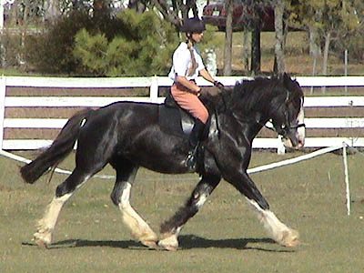
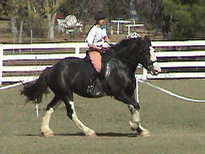
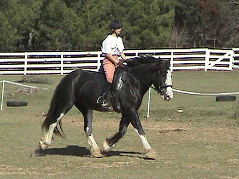
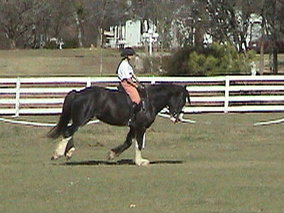
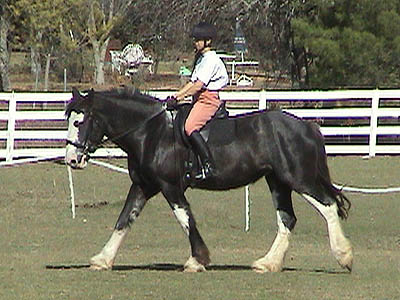
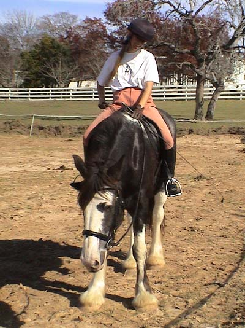

11/24/02
Working Emma
Cantering is happening, but it can still be a struggle.
The trot is just awesome.

She's got some reach.

We're getting the canter now. Still some kicking up of the heels, but it goes away when I ride through it.

A little heavy in the reins, but at least she's reaching forward.

She shortens and balances pretty easily at the canter. We did one 20 meter circle, with a little resistance, but no motorcycling...

Her head is the least steady at the walk. We think partly that she gets tired/sore, and partly that she still works on balance.

She gets really tired after a short workout.
The vet is looking into it. He's cleared her heart,
and is now focusing on her lungs and airway.